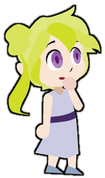

Innocent
"Free to be you and me"
The innocent is the optimist who sees the good in everyone. Their core desire is to live happily, giving them the motivation to do things right. While they may see or hear that someone is a bad person, they hold faith that there is still good in them. However, they tend to fear being punished for doing something wrong, leaving them open for someone to take advantage of their naivete. The innocent's purity inspires the audience to be optimistic.
Also known as:
- Naive
- Child
- Saint
- Dreamer
Qualities
- Optimism
- Imagination
- Purity
- Hope
Flaws
- Naivete
- Vulnerability